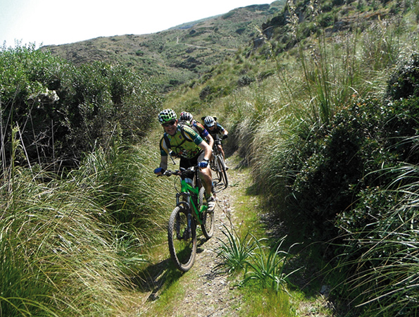

Slow Menorca, le loisir tranquille
Si vous êtes un inconditionnel de randonnées, vous avez bien fait de choisir Minorque comme destination. Si vous aimez faire du vélo, êtes passionné de chevaux et souhaitez découvrir des endroits secrets, vous avez alors fait un excellent choix. Parce que Minorque vous offre tout ce dont vous avez besoin pour pratiquer tranquillement un sport. Randonnées pédestres, équestres, cyclisme, golf, tennis, cricket…Tout est possible sur cette île.
Minorque vous propose un large choix d’espaces où vous promener. Chaussez-vous bien et soyez prêt à parcourir n’importe quelle route que l’île met à votre disposition. Tout d’abord, commencez par le Camí de Cavalls et ses vingt tronçons et ensuite, continuez sur n’importe quel trajet que vous propose les agences spécialisées de l’île. Aussi bien le littoral que l’intérieur de l’île, vous proposent des chemins adaptés à la randonnée, avec en plus un paysage si beau qui rend n’importe quel effort plus agréable. Une promenade intense, n’est-elle pas plus facile accompagnée de la bande sonore de la mer enlaçant la côte ou bien même le chant des oiseaux dans la végétation intérieure?
Si vous préférez le vélo, Minorque est l’endroit idéal. De nombreuses entreprises se feront le plaisir de vous conseiller, de vous guider et vous offriront leurs produits pour parcourir une île qui semble avoir été créée pour être sillonnée à pédales. Il y a des routes pour tous les goûts. De la plus douce à la plus abrupte. Même si l’île semble plate, on peut y trouver des chemins qui par leur complexité surprennent. D’ailleurs, l’effort n’est-il pas plus supportable lorsqu’il est entouré d’un paysage comme celui qu’offre Minorque?
Si parcourir l’île à pied ou à vélo est déjà en elle-même une offre intéressante, l’option de le faire à cheval est irrésistible. Imaginez-vous un instant. Traverser les plages vierges à cheval, l’animal le plus vénéré de l’île. Si les Minorquins ont un chemin équestre, c’est bien pour quelque chose. Les habitants de cette terre savent prendre soin de ces animaux comme personne au monde. Laissez-vous guider par les experts de l’île, et montez à cheval afin de découvrir Minorque sans que vos pieds ne touchent le sol. Ça ne vous semble pas émouvant?
La randonnée, le cyclisme ou les promenades à cheval sont des options très tentatrices qui donnent lieu à un tourisme actif. Si vous êtes un amoureux de sport, sachez que l’île vous offre l’embarras du choix. Nous disposons d’installations, où vous pourrez pratiquer du sport comme vous le souhaitez : avec moniteur ou sans. Découvrez comment cette île garde ancrée en elle ses origines Britanniques, et pratiquez le cricket dans un climat méditerranéen. Un cocktail terriblement avantageux, non ? Si vous aimez le golf, “Son Parc” est fait pour vous, un champ dessiné avec la nature même de la méditerranée aussi bien pour les débutants que pour les plus confirmés. Et bien d’autres choses encore à votre disposition.
Vous voyez, à Minorque il est possible de s’y reposer mais aussi de prendre soin de son corps tranquillement. C’est à vous de décider. L’île met à votre disposition tout ce dont vous avez besoin.
La Menorca slow est ici, elle vous attend. Nous jouons?